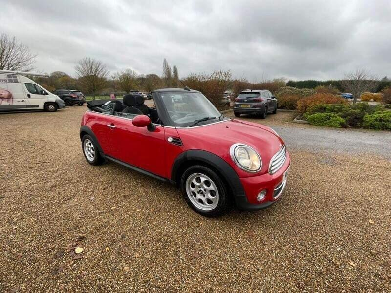
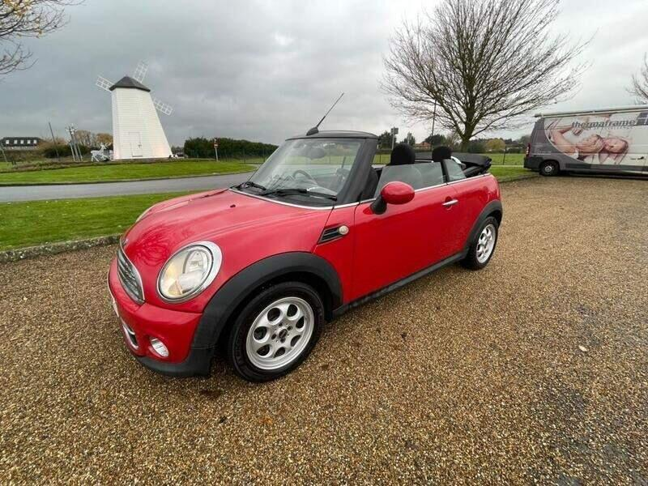
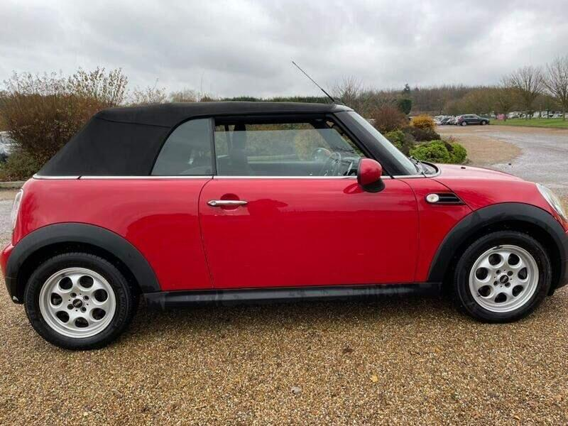
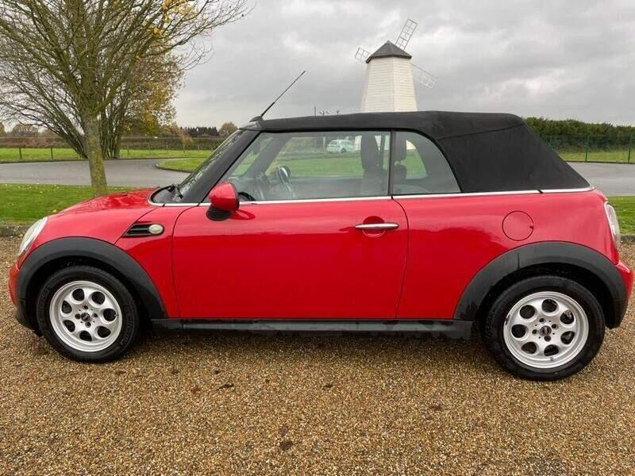

Seller photos from the AutoTrader ad.
MINI Convertible 1.6 Cooper D
A late, two-owner diesel MINI. The MOT is due soon, so haggle.
Key facts
| Price | £2,695 |
|---|---|
| Year | 2014 |
| Miles | 116,500 |
| Model | MINI Convertible 1.6 Cooper D |
| Colour | Red |
| Registration | 2014 (64 reg) |
| Owners | 2 owners |
| Service history | Not stated |
| MOT (AutoTrader ad) | 18 Dec 2026 (ad) |
| Seller | Private |
| Location | Westerham |
| From GU7 | 30 mi (AutoTrader) |
| Listed on AutoTrader | 14/10/2026 |
| Checked | 15 October 2026 |
Why buy it
- Only 2 owners from new; service history; 2 keys (ad)
- 50+ mpg diesel (ad)
- The newest car on the list (2014)
Things to check
MOT only to Dec 2026
Some radio buttons don't work (~£100–120) and small rear bumper damage (ad)
Not ULEZ-compliant (ad)
- MINI Convertible R52/R57 weak spots
Not flagged as a major issue in our sources; check for water ingress via roof drains and seals. R52 CVT auto fails (avoid); supercharged R52 power-steering pump; pre-Nov 2011 Prince timing-chain tensioners; roof hydraulics £395–495 average repair, R57 roof from ~£1,735.
Seller says (extract)
“Well looked after car, runs great and ready to go. Comes with service history and MOT until December 2026. 2 keys and only 2 owners from new. Mileage is 116,500., Cheap to run with low road tax 50+ MPG. Not ULEZ compliant., Great car for the summer months , , A couple of minor issues reflected in the price:, , Some radio buttons don't work (common issue), around 100-120 to fix, Small damage on rear bumper, replacement from LA Mini approx 100-150, Air Conditioning - Manual, Basic Bluetooth Function with USB Audio, Front Fog Lights - LED, Electric windows, Air conditioning, Parking aid, Bluetooth, Power steering, Central locking, Alarm, Immobiliser, Driver's airbags, Passenger airbags. 4 seats, Red, 2 owners, £2,695…”